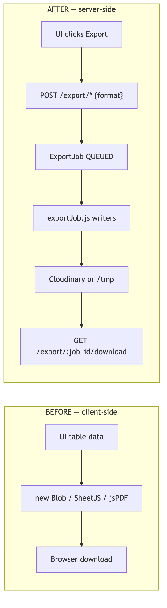
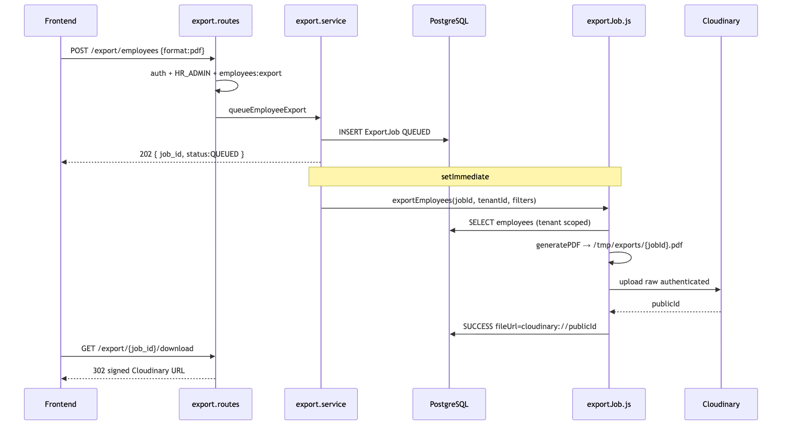
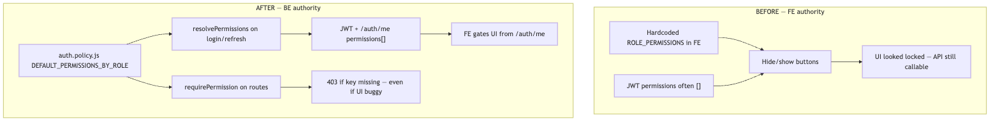
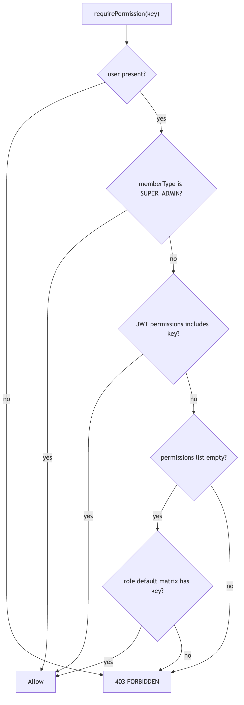
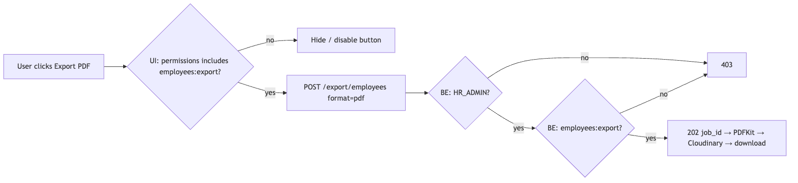

| Audience | Backend + UI engineers |
| Live API | ems-api.saqibsaeed.cloud |
| Date | 2026-07-22 |
| Companion to | EMS_BACKEND_TECHNICAL_DOCUMENTATION.pdf |
Separate companion PDF to the main Technical Documentation.
Focus: how CSV / Excel / JSON / PDF generation moved to the backend, every library involved, and how permissions became backend source-of-truth.
Deployed: Hostingerems-backendcommit68d32f4(2026-07-19).
Live API:https://ems-api.saqibsaeed.cloud/api/v1
Two UI-side problems were fixed on the backend in the July 2026 Hostinger hardening pass:
| Problem | Old (frontend) | New (backend) |
|---|---|---|
| Operational exports | Browser built CSV / Excel / PDF with Blob, client
libraries, or string concat |
Server queues a job, writes the file from live DB rows, stores it, returns download |
| Permission gates | FE hard-coded role→permission matrices; empty JWT
permissions[] broke gates |
auth.policy.js is SoT; JWT carries resolved
permissions; requirePermission enforces on every
mutating/export route |
This PDF explains every library, every step, and every file involved — not a summary.

Why the old way was wrong
Why the new way is correct
export.repository.js.generateExportFile) for all four
formats.raw +
authenticated) so Docker restarts do not lose files.ExportJob row
with job_id, type, format, status.| Step | Who | What happens | Code |
|---|---|---|---|
| 0 | FE | User clicks Export → chooses format | Must not use Blob |
| 1 | FE → BE | POST /api/v1/export/employees body
{ "format": "pdf" } |
export.routes.js |
| 2 | Middleware | JWT verify → authorize(['HR_ADMIN']) →
requirePermission('employees:export') |
authenticate.js + auth.policy.js |
| 3 | Controller | Zod-parse body (csv\|excel\|json\|pdf) |
export.controller.js +
export.validator.js |
| 4 | Service | uuidv4() → createExportJob status
QUEUED |
export.service.js |
| 5 | Service | Return 202
{ job_id, status: "QUEUED", estimated_completion_time }
immediately |
same |
| 6 | Service | setImmediate(() => exportEmployees(...)) —
non-blocking worker |
same |
| 7 | Worker | getEmployeesForExport(tenantId, filters) — live
Postgres |
export.repository.js |
| 8 | Worker | generateExportFile(rows, 'employees', format, jobId) |
exportJob.js |
| 9a | CSV path | flattenObject → escapeCSV →
writeFileSync |
generateCSV |
| 9b | Excel path | ExcelJS workbook, frozen header #4F46E5, alt rows
#F0F0FF |
generateExcel |
| 9c | JSON path | JSON.stringify(data, null, 2) |
generateJSON |
| 9d | PDF path | PDFKit landscape A4, indigo header bar, max 8 columns | generatePDF |
| 10 | Persist | Read file buffer → Cloudinary upload
resourceType:'raw', type:'authenticated' →
store cloudinary://{publicId} |
persistSuccess |
| 11 | Fallback | If Cloudinary fails → keep local
/tmp/exports/{jobId}.{ext} URL |
same |
| 12 | Status | ExportJob → SUCCESS +
fileUrl |
repository |
| 13 | FE | GET /export/{job_id}/download with Bearer |
controller |
| 14a | Download | If cloudinary:// → 302 to signed URL
(300s) |
getSignedDocumentUrl |
| 14b | Download | Else stream file from disk with
Content-Disposition: attachment |
createReadStream |
| 15 | Not ready | If status ≠ SUCCESS → 200 JSON status (poll again) | controller |

| Library | npm | What it is | Why we use it | How EMS uses it |
|---|---|---|---|---|
| ExcelJS | exceljs@^4.4.0 |
Pure-Node XLSX writer/reader | Styled workbooks without spawning Microsoft Excel or heavy browser SheetJS | generateExcel() — frozen header, indigo fill
FF4F46E5, white bold font, alternating
FFF0F0FF, auto column width capped at 40, footer “Total: N
records” |
| PDFKit | pdfkit@^0.19.1 |
Streaming PDF generator | Server PDF without Puppeteer/Chrome; tiny footprint for table exports | generatePDF() — layout:'landscape',
size:'A4', header bar #4F46E5, first
8 columns only (note if more), paginate when
doc.y near bottom |
| Cloudinary SDK | cloudinary@^2.10.0 |
Object storage + signed delivery | Durable files across Docker restarts; private
authenticated assets |
uploadToCloudinary(buffer, { resourceType:'raw', type:'authenticated', folder: ems/{tenantId}/exports, publicId: jobId });
download via private_download_url (~300s) |
Node fs |
built-in | Filesystem | Stage bytes before upload; fallback when Cloudinary down | writeFileSync / readFileSync under
config.exportsDir or /tmp/exports |
| Prisma | @prisma/client |
ORM | Tenant-safe queries + ExportJob lifecycle |
getEmployeesForExport / attendance / leave +
create/update job status |
| uuid | uuid@^14 |
UUID v4 | Opaque job_id clients poll |
uuidv4() in queue*Export |
| Zod | zod@^3.23 |
Schema validation | Reject bad format / missing date ranges before
queue |
export.validator.js enums
csv\|excel\|json\|pdf |
| Fastify | fastify@4 |
HTTP framework | Route hooks for auth + permission | onRequest: [authenticate, authorize, requirePermission] |
| Pino | pino |
Structured logs | Trace queue / success / Cloudinary failure | type: 'export_queued' \| 'export_completed' \| 'export_uploaded_cloudinary' |
Workbook → worksheet titled from export type
(Employees, Attendance,
Leave).views: [{ state: 'frozen', ySplit: 1 }] keeps header
visible while scrolling in Excel.department.name →
department.name) so one flat table is written.No data available (still a
valid XLSX).doc.on('data'), concatenates,
writes once on end.#F0F0FF matches Excel
branding.cloudinary:// +
public_id (not a permanent public HTTP URL).authenticated means
anonymous URL fetch returns 401.curl -L / browser).format body |
On-disk / download name | MIME | Generator | Notes |
|---|---|---|---|---|
csv |
{jobId}.csv |
text/csv |
generateCSV |
RFC quoting for , " newlines; empty file
if 0 rows |
excel |
{jobId}.xlsx |
OOXML spreadsheet | generateExcel |
ExcelJS; not CSV-with-.xls |
json |
{jobId}.json |
application/json |
generateJSON |
Pretty nested objects (not flattened) |
pdf |
{jobId}.pdf |
application/pdf |
generatePDF |
Landscape A4 PDFKit |
| Method | Path | Auth | Body / query | HTTP |
|---|---|---|---|---|
| POST | /api/v1/export/employees |
HR_ADMIN + employees:export |
format, optional department_id,
status, include_archived |
202 |
| POST | /api/v1/export/attendance |
same | requires from_date,
to_date + format |
202 |
| POST | /api/v1/export/leave |
same | requires from_date,
to_date + format |
202 |
| GET | /api/v1/export/:job_id/download |
same | — | 200 stream / 302 signed / 200 status JSON |
| GET | /api/v1/export/list |
authenticated | page, limit, status |
200 |
202 body:
{
"success": true,
"data": {
"job_id": "01a08046-e986-4a97-bbfe-68c3f042e8a3",
"status": "QUEUED",
"estimated_completion_time": 2
}
}| Layer | File |
|---|---|
| Routes + dual auth | src/modules/export/export.routes.js |
| HTTP + MIME + 302 | src/modules/export/export.controller.js |
Queue + setImmediate |
src/modules/export/export.service.js |
| Prisma + ExportJob | src/modules/export/export.repository.js |
| Zod | src/modules/export/export.validator.js |
| CSV/Excel/JSON/PDF + Cloudinary persist | src/jobs/exportJob.js |
| Cloudinary helpers | src/utils/cloudinary.js |
| Permission gate | src/modules/auth/auth.policy.js |
new Blob([csvString]), client SheetJS, client
jsPDF for employees / attendance / leave operational
exports.POST /export/* → store job_id →
open/poll GET /export/:job_id/download./files/:jobId./auth/me includes
employees:export (and role allows).docs/UI_CONTRACT_server_exports_permissions_realtime_logs.md.BASE=https://ems-api.saqibsaeed.cloud/api/v1
TOKEN=$(curl -s -X POST $BASE/auth/login \
-H 'content-type: application/json' -H 'x-tenant-key: acme-corp-001' \
-d '{"email":"hr@acme.test","password":"Password123!"}' \
| python3 -c 'import sys,json; print(json.load(sys.stdin)["data"]["accessToken"])')
# CSV
curl -s -X POST $BASE/export/employees -H "Authorization: Bearer $TOKEN" \
-H 'content-type: application/json' -d '{"format":"csv"}'
# Excel
curl -s -X POST $BASE/export/employees -H "Authorization: Bearer $TOKEN" \
-H 'content-type: application/json' -d '{"format":"excel","status":"ACTIVE"}'
# PDF
curl -s -X POST $BASE/export/employees -H "Authorization: Bearer $TOKEN" \
-H 'content-type: application/json' -d '{"format":"pdf"}'
# JSON attendance (dates required)
curl -s -X POST $BASE/export/attendance -H "Authorization: Bearer $TOKEN" \
-H 'content-type: application/json' \
-d '{"format":"json","from_date":"2026-07-01","to_date":"2026-07-19"}'
# Download (follow 302)
curl -sL -o /tmp/ems-export.bin -H "Authorization: Bearer $TOKEN" \
"$BASE/export/<JOB_ID>/download"
# Employee denied
EMP=$(curl -s -X POST $BASE/auth/login -H 'content-type: application/json' \
-H 'x-tenant-key: acme-corp-001' \
-d '{"email":"priya@acme.test","password":"Password123!"}' \
| python3 -c 'import sys,json; print(json.load(sys.stdin)["data"]["accessToken"])')
curl -s -o /dev/null -w '%{http_code}\n' -X POST $BASE/export/employees \
-H "Authorization: Bearer $EMP" -H 'content-type: application/json' -d '{"format":"csv"}'
# → 403Proven live (2026-07-19 via Vercel BFF): HR → 202 QUEUED; Employee → 403 FORBIDDEN.

Why FE-as-authority failed
permissions[] in JWT made FE hide everything or
fall back to wrong constants.if (role === 'HR') in
React — anyone can call curl.What “moved to backend” means
src/modules/auth/auth.policy.js →
DEFAULT_PERMISSIONS_BY_ROLE.resolvePermissions(user):
RolePermission rows from DB.memberType.requirePermission('employees:export') (and write/delete
keys on employee mutations)./auth/me and
never treat local constants as authority.| Key | Module | Meaning |
|---|---|---|
employees:read |
employees | View employees |
employees:write |
employees | Create / update |
employees:delete |
employees | Soft delete |
employees:export |
employees | Queue/download exports |
departments:read |
departments | View |
departments:write |
departments | Manage |
attendance:read |
attendance | View |
attendance:write |
attendance | Mutate |
leave:read |
leave | View |
leave:request |
leave | Request |
leave:approve |
leave | Approve / deny |
analytics:read |
analytics | View analytics |
audit:read |
audit | View audit logs |
permissions:manage |
settings | Edit role matrix |
| Role | Defaults |
|---|---|
| SUPER_ADMIN | All keys including permissions:manage. Also bypasses
hasPermission checks. |
| HR_ADMIN | employees CRUD+export, departments r/w, attendance r/w, leave
r/request/approve, analytics, audit — not
permissions:manage |
| MANAGER | employees:read, departments:read, attendance r/w, leave r/request/approve, analytics:read — no export |
| EMPLOYEE | employees:read, departments:read, attendance r/w, leave read/request — no export |
| AUDITOR | read-only employees/departments/attendance/leave + analytics + audit |
hasPermission)
This empty-token fallback exists so old JWTs minted before seed do not lock out HR on day-1. After refresh, tokens carry the full list.
resolvePermissions(user) → string array.GET /auth/me.requirePermission using request.user from
JWT.// export.routes.js — both required
onRequest: [
authenticate,
authorize(['HR_ADMIN']), // role enum
requirePermission('employees:export'), // fine-grained key
]| Actor | Role OK? | employees:export? |
Result |
|---|---|---|---|
| HR_ADMIN with default grants | yes | yes | 202 |
| HR_ADMIN after admin removes export key + refreshed token | yes | no | 403 |
| EMPLOYEE | no | no | 403 (authorize or permission) |
| SUPER_ADMIN | bypass | bypass | allowed |
| Method | Path | Who | Effect |
|---|---|---|---|
| GET | /settings/roles-permissions |
SUPER_ADMIN | Read matrix |
| PATCH | /settings/roles-permissions |
SUPER_ADMIN + permissions:manage |
Update RolePermission rows |
After PATCH: FE must refresh token or re-login. Until then UI may look stale; backend still enforces the new grants on the next request that carries an updated JWT. Requests with old JWT keep old grants until expiry/refresh.
Seed helper: ensureTenantRolePermissionDefaults — runs
once (setting flag
role_permissions_defaults_seeded); never wipes admin
customizations later.
| Concern | File |
|---|---|
Defaults + requirePermission +
hasPermission |
src/modules/auth/auth.policy.js |
resolvePermissions + catalogue seed |
src/modules/auth/auth.service.js |
| Role authorize middleware | src/middleware/authenticate.js |
| Export dual gate | src/modules/export/export.routes.js |
| Employee write/delete/export gates | src/modules/employees/employees.routes.js |
| Settings matrix API | src/modules/settings/settings.*.js |
/auth/me →
permissions[] (+ memberType).{ requiredPermission, userRole } when key missing — show a
clear message, do not retry as Blob export.
| # | Check | Expected |
|---|---|---|
| 1 | HR POST .../export/employees
{format:csv\|excel\|json\|pdf} |
202 + job_id |
| 2 | GET .../export/{job_id}/download after ~1–2s |
file or 302 |
| 3 | EMP same POST | 403 |
| 4 | Remove employees:export from HR via settings → refresh
token → export |
403 |
| 5 | Restore permission → export | 202 again |
| 6 | /auth/me for HR |
permissions includes employees:export |
| 7 | No client Blob for operational exports in FE |
code review |
| Doc | Use |
|---|---|
docs/EMS_BACKEND_TECHNICAL_DOCUMENTATION.pdf |
Full system tech doc (v3.1) — §10.4 / §10.5 |
docs/UI_CONTRACT_server_exports_permissions_realtime_logs.md |
FE must-do contract |
docs/BACKEND_CHANGELOG_hostinger_hardening_2026-07-19.md |
Changelog |
docs/LIVE_UI_ROLE_MATRIX_VERCEL_2026-07-19.md |
Live HR 202 / EMP 403 proof |
docs/UI_TEAM_HANDOFF_HOSTINGER_HARDENING_2026-07-19.md |
Handoff index |
| Date | Version | Notes |
|---|---|---|
| 2026-07-22 | 1.0 | Dedicated deep-dive PDF: backend exports (all libraries + steps) + permissions SoT migration |